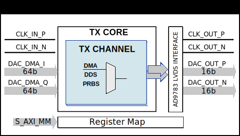

AXI PWM Generator#
The AXI PWM Generator core is used to generate a maximum of 16 configurable signals (Pulse-Width Modulations). The pulses are generated according to the state of a counter; there is one counter for each pulse.
Features#
Up to 16 configurable signals (period, width, offset)
External synchronization
External clock
Files#
Name |
Description |
|---|---|
SystemVerilog source for the top module |
|
Verilog source for a channel module |
|
SystemVerilog source for regmap |
|
Dynamic constraint file (AMD tools) |
|
Constraint file (Intel tools) |
|
IP definition file (AMD tools) |
|
IP definition file (Intel tools) |
Block Diagram#
Configuration Parameters#
Note
The pulse period, width and offset are set in number of clock cycles. The clock is the axi clock or if activated, the external clock.
Name |
Description |
Default Value |
Choices/Range |
|---|---|---|---|
ID |
Core ID should be unique for each IP in the system. |
0 |
|
ASYNC_CLK_EN |
Use external clock, asynchronous to s_axi_aclk. |
True |
|
N_PWMS |
Number of pulses/pwms. |
1 |
|
PWM_EXT_SYNC |
PWM offset counter uses external sync. |
0 |
|
EXT_ASYNC_SYNC |
The external sync for pulse 0 is asynchronous. |
0 |
|
SOFTWARE_BRINGUP |
Require software, to bring the core out if reset |
1 |
|
EXT_SYNC_PHASE_ALIGN |
Set default flag value for external sync phase align feature |
0 |
|
FORCE_ALIGN |
Set default flag value for force align feature |
0 |
|
START_AT_SYNC |
Set default flag value for start at sync feature |
1 |
|
PULSE_0_WIDTH |
PULSE 0 width. |
7 |
From 0 to 2147483647. |
PULSE_1_WIDTH |
PULSE 1 width. |
7 |
From 0 to 2147483647. |
PULSE_2_WIDTH |
PULSE 2 width. |
7 |
From 0 to 2147483647. |
PULSE_3_WIDTH |
PULSE 3 width. |
7 |
From 0 to 2147483647. |
PULSE_4_WIDTH |
PULSE 4 width. |
7 |
From 0 to 2147483647. |
PULSE_5_WIDTH |
PULSE 5 width. |
7 |
From 0 to 2147483647. |
PULSE_6_WIDTH |
PULSE 6 width. |
7 |
From 0 to 2147483647. |
PULSE_7_WIDTH |
PULSE 7 width. |
7 |
From 0 to 2147483647. |
PULSE_8_WIDTH |
PULSE 8 width. |
7 |
From 0 to 2147483647. |
PULSE_9_WIDTH |
PULSE 9 width. |
7 |
From 0 to 2147483647. |
PULSE_10_WIDTH |
PULSE 10 width. |
7 |
From 0 to 2147483647. |
PULSE_11_WIDTH |
PULSE 11 width. |
7 |
From 0 to 2147483647. |
PULSE_12_WIDTH |
PULSE 12 width. |
7 |
From 0 to 2147483647. |
PULSE_13_WIDTH |
PULSE 13 width. |
7 |
From 0 to 2147483647. |
PULSE_14_WIDTH |
PULSE 14 width. |
7 |
From 0 to 2147483647. |
PULSE_15_WIDTH |
PULSE 15 width. |
7 |
From 0 to 2147483647. |
PULSE_0_PERIOD |
PULSE 0 period. |
10 |
From 0 to 2147483647. |
PULSE_1_PERIOD |
PULSE 1 period. |
10 |
From 0 to 2147483647. |
PULSE_2_PERIOD |
PULSE 2 period. |
10 |
From 0 to 2147483647. |
PULSE_3_PERIOD |
PULSE 3 period. |
10 |
From 0 to 2147483647. |
PULSE_4_PERIOD |
PULSE 4 period. |
10 |
From 0 to 2147483647. |
PULSE_5_PERIOD |
PULSE 5 period. |
10 |
From 0 to 2147483647. |
PULSE_6_PERIOD |
PULSE 6 period. |
10 |
From 0 to 2147483647. |
PULSE_7_PERIOD |
PULSE 7 period. |
10 |
From 0 to 2147483647. |
PULSE_8_PERIOD |
PULSE 8 period. |
10 |
From 0 to 2147483647. |
PULSE_9_PERIOD |
PULSE 9 period. |
10 |
From 0 to 2147483647. |
PULSE_10_PERIOD |
PULSE 10 period. |
10 |
From 0 to 2147483647. |
PULSE_11_PERIOD |
PULSE 11 period. |
10 |
From 0 to 2147483647. |
PULSE_12_PERIOD |
PULSE 12 period. |
10 |
From 0 to 2147483647. |
PULSE_13_PERIOD |
PULSE 13 period. |
10 |
From 0 to 2147483647. |
PULSE_14_PERIOD |
PULSE 14 period. |
10 |
From 0 to 2147483647. |
PULSE_15_PERIOD |
PULSE 15 period. |
10 |
From 0 to 2147483647. |
PULSE_0_OFFSET |
PULSE 0 offset. |
0 |
From 0 to 2147483647. |
PULSE_1_OFFSET |
PULSE 1 offset. |
0 |
From 0 to 2147483647. |
PULSE_2_OFFSET |
PULSE 2 offset. |
0 |
From 0 to 2147483647. |
PULSE_3_OFFSET |
PULSE 3 offset. |
0 |
From 0 to 2147483647. |
PULSE_4_OFFSET |
PULSE 4 offset. |
0 |
From 0 to 2147483647. |
PULSE_5_OFFSET |
PULSE 5 offset. |
0 |
From 0 to 2147483647. |
PULSE_6_OFFSET |
PULSE 6 offset. |
0 |
From 0 to 2147483647. |
PULSE_7_OFFSET |
PULSE 7 offset. |
0 |
From 0 to 2147483647. |
PULSE_8_OFFSET |
PULSE 8 offset. |
0 |
From 0 to 2147483647. |
PULSE_9_OFFSET |
PULSE 9 offset. |
0 |
From 0 to 2147483647. |
PULSE_10_OFFSET |
PULSE 10 offset. |
0 |
From 0 to 2147483647. |
PULSE_11_OFFSET |
PULSE 11 offset. |
0 |
From 0 to 2147483647. |
PULSE_12_OFFSET |
PULSE 12 offset. |
0 |
From 0 to 2147483647. |
PULSE_13_OFFSET |
PULSE 13 offset. |
0 |
From 0 to 2147483647. |
PULSE_14_OFFSET |
PULSE 14 offset. |
0 |
From 0 to 2147483647. |
PULSE_15_OFFSET |
PULSE 15 offset. |
0 |
From 0 to 2147483647. |
Interface#
Physical Port |
Logical Port |
Direction |
Dependency |
|---|---|---|---|
s_axi_awaddr |
AWADDR |
in [15:0] |
|
s_axi_awprot |
AWPROT |
in [2:0] |
|
s_axi_awvalid |
AWVALID |
in |
|
s_axi_awready |
AWREADY |
out |
|
s_axi_wdata |
WDATA |
in [31:0] |
|
s_axi_wstrb |
WSTRB |
in [3:0] |
|
s_axi_wvalid |
WVALID |
in |
|
s_axi_wready |
WREADY |
out |
|
s_axi_bresp |
BRESP |
out [1:0] |
|
s_axi_bvalid |
BVALID |
out |
|
s_axi_bready |
BREADY |
in |
|
s_axi_araddr |
ARADDR |
in [15:0] |
|
s_axi_arprot |
ARPROT |
in [2:0] |
|
s_axi_arvalid |
ARVALID |
in |
|
s_axi_arready |
ARREADY |
out |
|
s_axi_rdata |
RDATA |
out [31:0] |
|
s_axi_rresp |
RRESP |
out [1:0] |
|
s_axi_rvalid |
RVALID |
out |
|
s_axi_rready |
RREADY |
in |
Physical Port |
Logical Port |
Direction |
Dependency |
|---|---|---|---|
s_axi_aclk |
CLK |
in |
Physical Port |
Logical Port |
Direction |
Dependency |
|---|---|---|---|
s_axi_aresetn |
RST |
in |
Physical Port |
Logical Port |
Direction |
Dependency |
|---|---|---|---|
ext_clk |
CLK |
in |
ASYNC_CLK_EN = 1 |
Physical Port |
Direction |
Dependency |
Description |
|---|---|---|---|
ext_sync |
in |
PWM_EXT_SYNC == 1 |
External sync signal, synchronizes pulses to an external signal. |
pwm_* |
out |
N_PWMS > * |
Output PWM, up to 16, indexed from 0 to 15. |
Detailed Description#
Let’s start with some base notions:
The pulse generators are based on incrementing counters.
The pulse period starts on the high level interval and ends on the low level.
By default, all counters start at the same time. When a different phase (delay) is needed between the pulses, we can set an offset.
The offset feature can synchronize channels 0 to 15 relative to an offset counter.
The offset counter will wait for a HIGH -> LOW transition of the synchronization pulse (‘’load_config’’ or ‘’ext_sync’’). For more info see the below channel phase alignment feature.
To disable a PWM channel, write 0 to its
periodregister.The duty cycle is the ratio between pulse width over pulse period.
The following features can be enabled by setting a flag in the register REG_UP_CONTROL(0x18):
Channel phase alignment#
The AXI PWM Generator core can be synchronized by an external signal on the HIGH -> LOW transition of the ext_sync signal.
The external sync can be used in two modes, based on the external sync align feature.
external_sync_align flag is set(1) the ext_sync will trigger a phase align at each neg-edge.
otherwise the phase align must be armed by a load config toggle, while the external sync must be held HIGH.
Software bringup (software reset)#
If set, the software must bring the core out of reset, after a system reset, for the pwm signals to be generated.
Force align#
If set, the current active pulses are immediately stopped and realigned. Otherwise, the synchronized pulses will start only after all running pulse periods end. Software overwritable at runtime.
Start at sync#
If active, the pulses will start after the trigger event. Otherwise each pulse will start after a period equal to the one for which it is set. Software over writable at runtime.
This flags are software overwritable at runtime. Default value is given at build time.
software bringup = 1
start at sync = 1
force align = 0
ext sync align = 0
Timing Diagrams and examples#
The timing diagram below, shows the load_config functionality with
force sync and force start disabled.
The timing diagram below, shows the load_config functionality with
force sync disabled and force start enabled.
The timing diagram below, shows the load_config functionality with
force sync and force start enabled.
The below timing diagrams, shows the external_sync functionality:
Register Map#
DWORD |
BYTE |
Reg Name |
Description |
|||
|---|---|---|---|---|---|---|
BITS |
Field Name |
Type |
Default Value |
Description |
||
0x0 |
0x0 |
REG_VERSION |
Version and Scratch Registers |
|||
[31:0] |
VERSION[31:0] |
RO |
0x00020101 |
Version number. Unique to all cores. |
||
0x1 |
0x4 |
REG_ID |
Core ID |
|||
[31:0] |
ID[31:0] |
RO |
0x00000000 |
Instance identifier number. |
||
0x2 |
0x8 |
REG_SCRATCH |
Version and Scratch Registers |
|||
[31:0] |
SCRATCH[31:0] |
RW |
0x00000000 |
Scratch register. |
||
0x3 |
0xc |
REG_CORE_MAGIC |
Identification number |
|||
[31:0] |
CORE_MAGIC[31:0] |
RW |
0x504c5347 |
Identification number. |
||
0x4 |
0x10 |
REG_RSTN |
Reset and load values |
|||
[1:1] |
LOAD_CONFIG |
WO |
0x0 |
Loads the new values written in the config registers. |
||
[0:0] |
RESET |
RW |
0x0 |
Reset, default is (0x0). |
||
0x6 |
0x18 |
REG_CONFIG |
Features enable register |
|||
[2:2] |
EXT_SYNC_ALIGN |
RW |
0x0 |
If active the ext_sync will trigger a phase align at each neg-edge. Otherwise the phase align will be armed by a load config toggle. |
||
[1:1] |
FORCE_ALIGN |
RW |
0x0 |
If active the current active pulses are immediately stopped and realigned. Otherwise, the synchronized pulses will start only after all running pulse periods end. |
||
[0:0] |
START_AT_SYNC |
RW |
0x1 |
If active, the pulses will start after the trigger event. Otherwise each pulse will start after a period equal to the one for which it is set. Default valew can be overwritten at build time through parameters. |
||
0x5 |
0x14 |
REG_NB_PULSES |
Number of pulses |
|||
[31:0] |
NB_PULSES |
RO |
0x00000000 |
Number of configurable pulses. |
||
0x10 |
0x40 |
REG_PULSE_X_PERIOD |
Pulse x period |
|||
[31:0] |
PULSE_X_PERIOD[31:0] - base + 'h4 for each channel -> e.g. CH3 period - 'h4C |
RW |
0x00000000 |
Pulse x duration, defined in number of clock cycles. |
||
0x20 |
0x80 |
REG_PULSE_X_WIDTH |
Pulse x width |
|||
[31:0] |
PULSE_X_WIDTH[31:0] - base + 'h4 for each channel -> e.g. CH3 width - 'h8C |
RW |
0x00000000 |
Pulse x width (high time), defined in number of clock cycles. |
||
0x30 |
0xc0 |
REG_PULSE_X_OFFSET |
Pulse x offset |
|||
[31:0] |
PULSE_X_OFFSET[31:0] - base + 'h4 for each channel -> e.g. CH3 offset - 'hCC |
RW |
0x00000000 |
Pulse x offset, defined in number of clock cycles. |
||
Access Type |
Name |
Description |
|---|---|---|
RO |
Read-only |
Reads will return the current register value. Writes have no effect. |
RW |
Read-write |
Reads will return the current register value. Writes will change the current register value. |
WO |
Write-only |
Writes will change the current register value. Reads have no effect. |